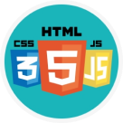

UI/UX design
Frontend
Backend
UX dizayni " foydalanuvchi tajribasi dizayni " atamasini anglatadi, UI esa " foydalanuvchi interfeysi dizayni " degan ma'noni anglatadi. Ikkala element ham mahsulot uchun hal qiluvchi ahamiyatga ega va yaqindan ishlaydi. Ammo ularning kasbiy munosabatlariga qaramay, rollarning o'zlari butunlay boshqacha bo'lib, mahsulotni ishlab chiqish jarayoni va dizayn intizomining juda boshqacha jihatlariga ishora qiladi.
Frontend dasturchilar birinchi navbatda HTML, CSS ni va Javascript tilini bilishlari talab etiladi. So'nggi bir necha yil ichida frontend dasturchilar roli rivojlandi va shuning uchun professional frontend dasturchilar ham rivojlangan(built-in) JavaScript ko'nikmalariga ega bo'lishilari kerak bo'lmoqda. Angular, React, Vue.js kabi frameworklar hozirgi kunda frontend dasturchilari orasida ommalashib bormoqda.
Backend dasturchilar kod yozadigan mashhur dasturlash tillari PHP, Ruby, Python, Node.js, C# va Java. Odatda yaxshi backend dasturchi bu tillardan birida master bo'ladi, lekin 2 yoki 3 dasturlash tilida ham yetarli darajada kod yoza oladigan ko'nikmasi mavjud bo'ladi. Backend dasturchilar, shuningdek, MySQL, PostgreSQL, Oracle, va SQL Server kabi ma'lumotlar bazalarining eng kamida bittasi bilan ishlash bo'yicha mutaxassis kerak bo'ladi.